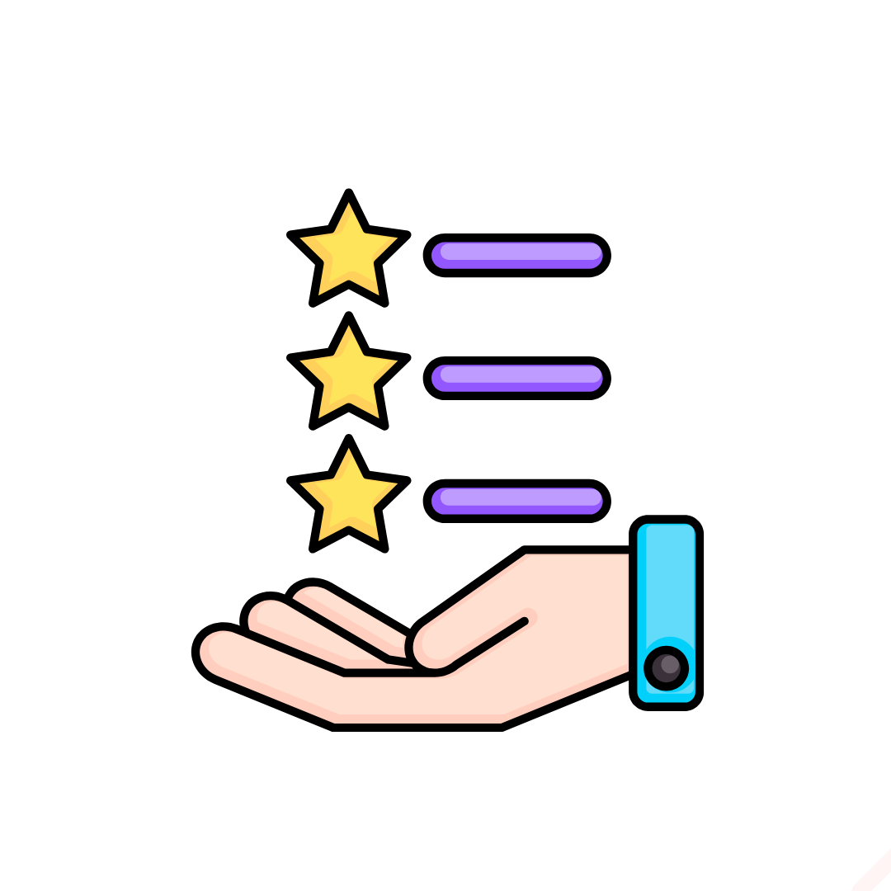

Heuristic fake-review detection
Flags rushed reviews, repeated wording, financial incentive language, and low-detail product descriptions.
This project combines sentiment analysis, review timing, duplicate-text detection, and IP-aware behavior checks to flag likely fake product reviews inside a simple e-commerce workflow.
Flags rushed reviews, repeated wording, financial incentive language, and low-detail product descriptions.

Users can register, browse products, place an order, and submit a review that is analyzed in real time.
Admins can inspect sentiment, suspicious reasons, IP information, timestamps, and product-level review history.
The live version focuses on a Node.js and MongoDB stack with rule-based NLP. It is ideal for demonstrating product review moderation ideas, admin visibility, and deployable architecture before layering on larger ML models.
Create an account, browse the catalog, place a test order, and submit a review to see the monitoring engine classify the result.